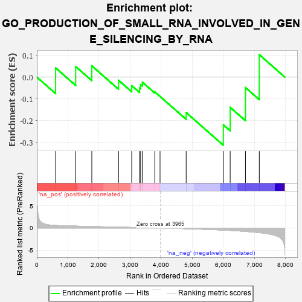

| | | Dataset | 7d |
| Phenotype | NoPhenotypeAvailable |
| Upregulated in class | na_neg |
| GeneSet | GO_PRODUCTION_OF_SMALL_RNA_INVOLVED_IN_GENE_SILENCING_BY_RNA |
| Enrichment Score (ES) | -0.3130285 |
| Normalized Enrichment Score (NES) | -0.74616057 |
| Nominal p-value | 0.8112676 |
| FDR q-value | 1.0 |
| FWER p-Value | 1.0 |
Table: GSEA Results Summary

Fig 1: Enrichment plot: GO_PRODUCTION_OF_SMALL_RNA_INVOLVED_IN_GENE_SILENCING_BY_RNA
Profile of the Running ES Score & Positions of GeneSet Members on the Rank Ordered List
| PROBE | GENE SYMBOL | GENE_TITLE | RANK IN GENE LIST | RANK METRIC SCORE | RUNNING ES | CORE ENRICHMENT | | 1 | SNIP1 | | | 604 | 0.593 | 0.0422 | No |
| 2 | PUS10 | | | 1249 | 0.438 | 0.0486 | No |
| 3 | AGO2 | | | 1767 | 0.343 | 0.0519 | No |
| 4 | PUM2 | | | 2627 | 0.209 | -0.0145 | No |
| 5 | SRRT | | | 3050 | 0.143 | -0.0390 | No |
| 6 | SMAD3 | | | 3303 | 0.105 | -0.0498 | No |
| 7 | SMAD1 | | | 3337 | 0.099 | -0.0343 | No |
| 8 | TUT4 | | | 3394 | 0.090 | -0.0235 | No |
| 9 | DGCR8 | | | 3792 | 0.029 | -0.0676 | No |
| 10 | NCOR1 | | | 3961 | 0.000 | -0.0887 | No |
| 11 | TERT | | | 4801 | -0.157 | -0.1628 | No |
| 12 | TUT7 | | | 5997 | -0.471 | -0.2191 | Yes |
| 13 | SMAD2 | | | 6216 | -0.541 | -0.1387 | Yes |
| 14 | EGFR | | | 6708 | -0.765 | -0.0480 | Yes |
| 15 | DDX5 | | | 7152 | -1.037 | 0.1029 | Yes |
Table: GSEA details [plain text format]
Fig 2: GO_PRODUCTION_OF_SMALL_RNA_INVOLVED_IN_GENE_SILENCING_BY_RNA: Random ES distribution
Gene set null distribution of ES for GO_PRODUCTION_OF_SMALL_RNA_INVOLVED_IN_GENE_SILENCING_BY_RNA